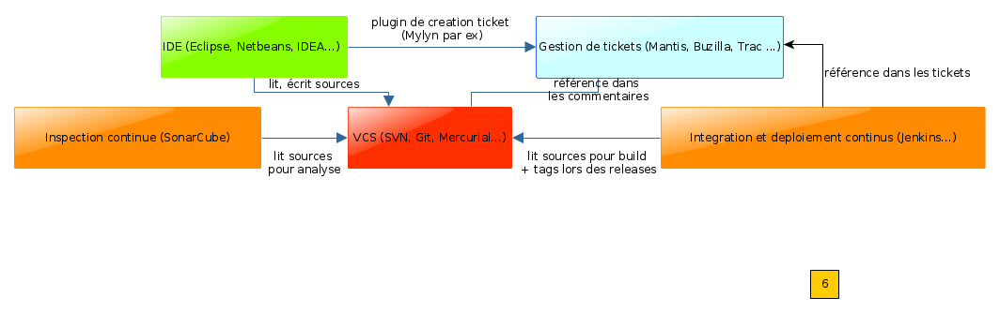
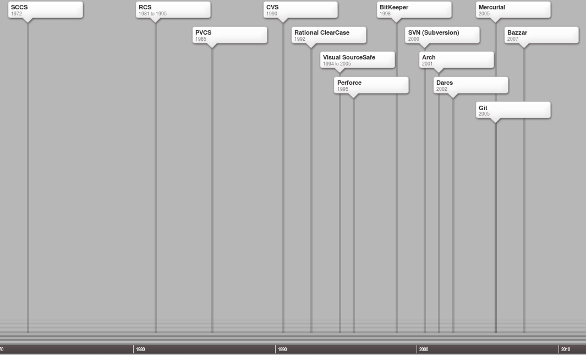
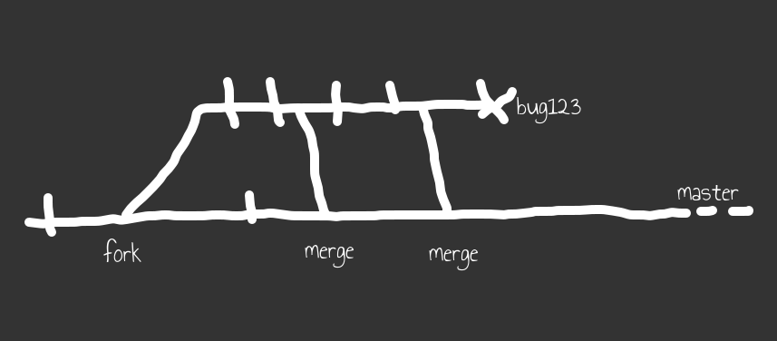
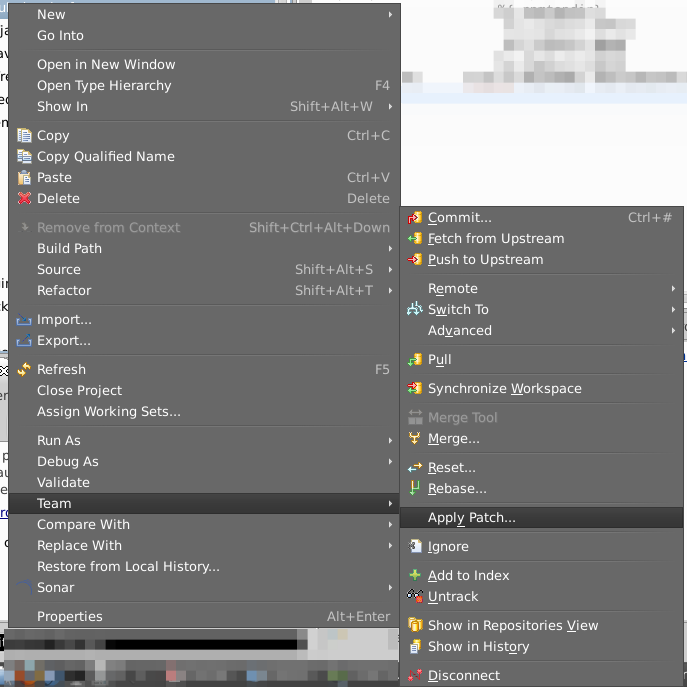
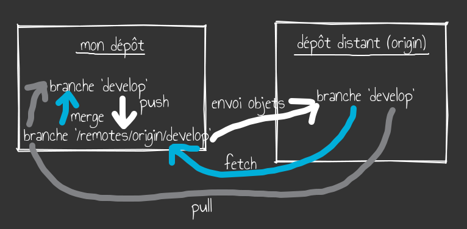
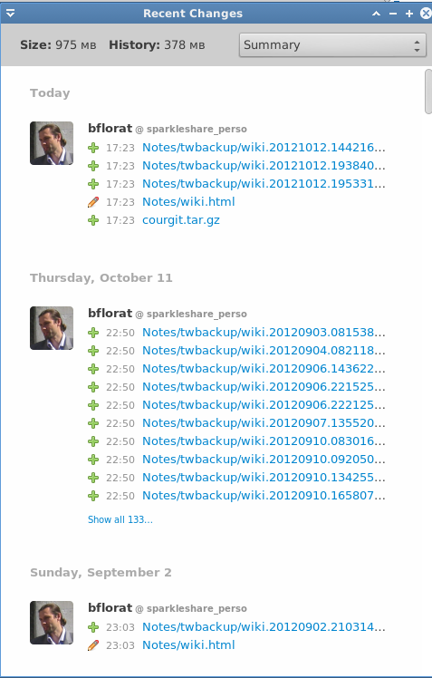
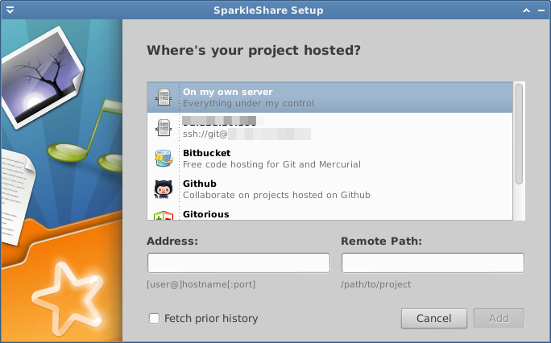

Source https://m.xkcd.com/1597/
La gestion de versions
Concepts / Git
IUT de Nantes – Département Informatique
LINA - Laboratoire d’Informatique de Nantes Atlantique
Cours de Licence professionnelle 2017
 Copyright (C) 2012-2017 Bertrand
Florat (contact)
Copyright (C) 2012-2017 Bertrand
Florat (contact)
Version 2.0 du 03 septembre 2017 / http://florat.net/cours_vcs/cours.html / Feuille de TP
Naviguer avec les fléches ou la molette de la souris
Agenda (en vert, les TP)
| 1- Concepts généraux gestion de version | 2- Présentation de Git | 3- Pratique de Git | 4- Travail collaboratif avec Git |
|
|
|
|
Note sur Subversion
Ce cours a intégré SVN en plus de Git de 2012 à 2016. En cas de besoin, l'ancien cours est toujours disponible
Motivations
TP1 : Que serait notre vie sans VCS ?
Vous faites partie d’une équipe de développement qui intervient sur la réalisation d’une application
- Comment conserver l’historique et revenir en arrière ?
- Comment partager le développement entre plusieurs personnes ?
- avec des contributeurs Open Source ?
- Comment gérer plusieurs variantes à la fois ?
- Comment tracer les modifications ?
- Comment fusionner les modifications ?
En utilisant un VCS !
Le VCS au sein de l'usine logicielle
Usage
- Utilisateurs : les développeurs et les intégrateurs
- Le VCS est avec l'IDE l'outil principal du développeur
- Principalement stockage de fichiers texte
Quels fichiers gérer en configuration ou pas ?
Le projet (et toutes ses versions) doit être auto-porteur
- Fichiers source (.java, .c, .html, .css...)
- Fichiers binaires non dérivés des sources, images par exemple
- Fichiers de build (maven: pom.xml, npm: package.json, Jenkinsfile ...)
Pas en configuration :
- Fichiers temporaires, générés ou compilés
- Librairies (utiliser un dépot Maven)
Selon les politiques :
- Fichiers projets de l'IDE (.project, .idea ...)
- Personnalisation et historique de l'IDE
Modèles de gestion des accès concurrents
- Modèle de contrôle de concurrence pessimiste: fichiers réservés en lecture seule
- Modèle de contrôle de concurrence optimiste : conflits possibles mais possibilité de réconcilier
- Quelques VCS (Clearcase, SVN etc) mixtes
- La plupart des VCS sont à contrôle optimiste : CVS, SVN, Git, Mercurial, BitKeeper etc.
- Le modèle pessismiste est obsolète et pousse à de mauvaises pratiques de développement, à éviter !
Modeles centralisés / client-serveur
 Copyright CC-BY-NC-SA Mathieu
Nebra (M@teo21)
Copyright CC-BY-NC-SA Mathieu
Nebra (M@teo21)
Exemples : CVS, SVN, ClearCase, Perforce
Un serveur gère l'intégralité des révisions (le dépôt), les développeurs récupèrent les modifications des autres et y ajoutent les leurs
Modeles distribués
 Copyright CC-BY-NC-SA Mathieu
Nebra (M@teo21)
Copyright CC-BY-NC-SA Mathieu
Nebra (M@teo21)
Exemples : Git, Mercurial, Baazar, BitKeeper
Chaque développeur possède un dépôt entier mais les dépôts peuvent s'échanger des modifications
Historique
Retour d'expérience : quels VCS dans les grands comptes ?
Concepts généraux
| SCM, VCS, outil de versioning, GCL | Source Control Management, Version Control System : outils permettant de gérer plusieurs versions de sources |
| dépôt, référentiel [repository, depot] | Un dépôt est une sortie de base de données de sources contenant toutes les révisions (tout l'historique) des fichiers ainsi que des données de gestion (méta-données) associées. On ne peut rien perdre dans un dépot. |
Concepts généraux
| Copie locale, espace de travail [working copy/directory/workspace] | Copie locale éditable d'une révision du dépôt et dont les modifications peuvent ensuite être validées (commitées) dans le dépôt |
| Commit, validation, "mettre en conf", [commit,checkin] |
(verbe) Enregistrer des modifications de la copie locale
vers dépôt. (nom) modifications elles-mêmes. |
Concepts généraux
| Branche [branch] | Une ligne de développement d'un projet. Sert par exemple à :
|
| Fork [fork] | Créer une nouvelle branche |
Concepts généraux
| Merge, fusion [merge] | Fusion des modifications de deux branches |
| Tag, étiquette [tag, label] | Photo du dépôt à un moment précis. Etiquette d'un
ensemble cohérent de sources.
Un tag peut présenter un aspect contractuel (signature numérique) |
Concepts généraux
| Modification concurrente |
Tentative de mise à jour de sources ayant divergées  Copyright CC-BY-SA Ben
Collins-Sussman, Brian W. Fitzpatrick, C. Michael Pilato Copyright CC-BY-SA Ben
Collins-Sussman, Brian W. Fitzpatrick, C. Michael Pilato
|
Concepts généraux
| Conflit [conflict] |
Modification concurrente d'une même zone de texte. La résolution est manuelle. Exemple de conflit : |
Bonnes pratiques
- Le code commité doit toujours compiler
- Commiter et merger souvent, mettre à jour régulièrement
- Utiliser avec un outil de gestion de tickets (Trac, Mantis, GitHub...)
- Grouper les modifications en commits cohérents
- Ne jamais commiter du code mort (en commentaire ou pas)
- Formatage coersitif des sources ASAP
- Version scheme : [X].[Y].[Z], exemple : 1.2.3
- Programme : [major (refonte complète)].[minor (évolution)].[no fix (correction) en partant de zéro]
- Librairie : [compatibilite API].[évolution].[fix], voir le semantic versionning http://semver.org/
Bonnes pratiques / Convention message de commit
- Une ligne de contexte (max 50 caractères) commencant par une majuscule. Pas de point. Réference le numéro de ticket s'il existe.
- Une ligne vide (options -m " et retour charriot)
- Un paragraphe détaillé (largeur 72 caractères max)
- Présent : "corrige", pas "a été corrigé"
- Donner toute information importante à destination d'un futur mainteneur
- Exemple :
Corrige #1456 problème fichier bootstrap vide Corrige une NPE se produisant quand le fichier bootstrap existe mais est vide. Reproduit uniquement par TU, non reporté par les utilisateurs à ce point. Voir aussi le bug #1674.
Zoom sur Git
- Linus Torvalds + 3 semaines = Git (utilisé pour le kernel Linux dès avril 2005)
- VCS le plus puissant et le plus performant mais non trivial
- Open Source (licence GPL)
- VCS de type distribué et contrôle optimiste uniquement
- Programme "Unix-like" : commandes de haut niveau (porcelain) utilisant commandes bas niveau (plumbing)
I'm an egotistical bastard, and I name all my projects after myself. First Linux, now git
Quand utiliser Git ?
- Equipes formées
- Projets Open-Source (GitHub/Bitbucket)
- Organisations décentralisées, développement non linéaire
- Latences réseau importantes
- Très grosses volumétries
Note : possible d'utiliser client git vers dépôt SVN (git-svn mais pas recommendé)
Quelques interfaces Git
- Tous OS
- egit/jgit (plugin Eclipse, de base)
- IDEA (de base)
- ATOM
- ungit (node.js)
- Gnu/Linux
- git (ligne de commande) + gitk (GUI pour l'historique)
- tig : navigateur Git en ncurses
- Microsoft Windows
- Git for Windows : git en ligne de commande + un éditeur graphique d'historique
- TurtoiseGit : éditeur graphique intégré dans l'OS
- Mac OSX
- Tower
- GitBox
Configurer git
Attention! ne surtout pas oublier de configurer Git avant tout commit, plus possible ensuite de changer nom/e-mail (sauf perte historique)
Trois niveaux de configuration :
- /etc/gitconfig : configuration multi-dépôt pour tous les utilisateurs de la machine
- ~/.gitconfig : configuration multi-dépôt pour l'utilisateur (en général, seul ce fichier est à modifié)
- /chemin dépôt/.git/config : configuration du dépôt
Configuration globale (multi-dépôts) de l'utilisateur courant :
$ git config --global user.name "John Doe" //Obligatoire ! $ git config --global user.email johndoe@example.com //Obligatoire ! $ git config --global push.default simple //Mode de push $ git config --global core.editor vim //choix de l'éditeur, vi par défaut $ git config --global merge.tool vimdiff //choix de l'outil de diff
Les alias
git config --global alias.co checkout
A mettre dans la section [alias] de ~/.gitconfig
Les plus courants :
cp = cherry-pick st = status -s cl = clone ci = commit co = checkout br = branch po = push origin
Création d'un nouveau dépôt
Note : un seul projet par dépôt pour raison d'isolation et de performances
$ cd ~/depots/my-app $ git init
Le contenu du répertoire (projet Maven/Eclipse) sera :
~/depots/my-app
/.git //dossier des meta-données git
/.project
/.classpath
/pom.xml
/src/main/java
/...
Dépôt nu (sans copie locale) :
- Créé avec : git init --bare
- Convention nommage : repertoire my-app.git
Récupération d'un dépôt existant
$ git clone url
Format des URLs :
ssh://[user@]host.xz[:port]/path/to/repo.git/ git://host.xz[:port]/path/to/repo.git/ http[s]://host.xz[:port]/path/to/repo.git/ ftp[s]://host.xz[:port]/path/to/repo.git/ rsync://host.xz/path/to/repo.git/ file:///path/to/repo.git/ = /path/to/repo.git/
Le dépôt que l'on vient de cloner est spécial : il est appelé origin (upstream repository)
Structure de base de Git
- Git stocke des : trees, blobs, tags et commits, tous référencés par un hash SHA-1 unique (intégrité)
- Les références (refs) sont des noms symboliques (signets) des hashs des commits
Copyright CC BY-SA-NC Scott Chacon
SHA-1 transforme une suite de caractères de 1 à 2^64 bits en un nombre de 160 bits. Non réversible. Exemple : a6e757a90e389270e75428473858e04f8c71121b. Versions réduites : a6e757a. Risque collisions infinitésimaux.
Les commits dans Git
- Chaque commit possède [1..n] parents
- Donc l'historique forme un graphe (orienté et acyclique ou 'DAG')
- Le commit est de niveau dépôt (pointe sur le tree racine)
- Notation : ref^n (nième père) et ref~n (nième premier père)

Copyright CC BY-SA-NC Scott Chacon
Branching
- Branche = ref (pointeur) vers un commit
- Créer une branche (fork) et s'y positionner :
$ git branch mabranche $ git checkout mabranche ou : $ git checkout -b mabranche
- Note : si changement de branche avec des modifications non commitées, git merge les copies locales sauf si conflit detecté (dans ce cas, on peut forcer tout de même le merge avec checkout -m).
Branching (suite)
- Branche 'HEAD' = ref vers branche courante
- Conventions :
- master : branche par défaut
- develop : branche de développment (instable)

Images Copyright CC BY-SA-NC Scott Chacon
Merge de branches
|
  |
Images Copyright CC BY-SA-NC Scott Chacon
Branches remote
- Branche remote (distante) : branche locale cache d'une branche d'un dépôt distant
- Exemples :
remotes/origin/HEAD -> origin/master remotes/origin/develop remotes/origin/master remotes/bob/feature300
- Lecture seule, se resynchronise avec son dépôt distant avec git fetch et git push
Branches remote (suite)
- Par défaut, push refusé si la branche distante a divergé
- git pull = git fetch + git merge
- Tracking remote branch : branche remote avec refspec,
push/fetch/pull sans arguments (le '+' signifie qu'on met à jour la référence même si ce n'est pas un ff)
[remote "origin"] url=git@gitorious.org:/my-app.git fetch=+refs/heads/*:refs/remotes/origin/* pull=refs/heads/*:refs/remotes/origin/* push = refs/heads/master:refs/heads/qa/master
- Après un git clone, branches tracking remote automatiquement créées : refs/origin/branche
Branches remote
Tags
- Un tag est une référence sur un commit + un auteur + un message + une signature numérique optionnelle
- Vrai élement du dépôt
- Créer un tag (option -a :
"annoted"):
$ git tag -a 1.0.0 -m 'Version 1.0'
- Attention, tags non poussés par défaut :
$ git push --tags
- Lister les tags :
git tag -l
Git supporte aussi des tags légers locaux (lightweight) qui sont simplement des branches en lecture seule. Peu utiles.
Cycle de vie d'un fichier dans la copie locale
- Index/staging area : sas (facultatif) de "pré-commit"
- Permet de sélectionner les modifications à commiter
- Débrayable avec l'option -a de git commit
- Attention : il faut obligatoirement faire git add pour un nouveau fichier
- Status des fichiers : git status
- Une fois prêt, commit : git commit
- Commit interactif de partie de fichier avec l'option -p (patch)
TP2 Exercice concepts Git
Voir la feuille de travaux pratiques
Commandes git de base
Voir aussi la cheat sheet [5]
Référence par défaut : HEAD, branche par défaut : master
- Commandes de changement de statut de la copie locale : checkout [-m], add, rm, mv, commit, stash
- Commandes de correction : revert, reset (soft|mixed|hard), commit --amend
- Commandes de branching : branch, merge, cherry-pick, rebase
- Commandes d'informations : log, status, diff, show, blame, cherry,reflog
- Commandes de travail sur branches distantes : remote, push, fetch, pull
Historique
- Commande de base: git log
- Voir les diff de chaque révision : option Spécifier des intervales de temps
git log --since=2.weeks
- Voir les diff de chaque révision : option git show
- Voir un graphe des révisions : option git log --graph
- git log branche1..branche2 : tous les nouveaux commits de la branche2 uniquement
- Recherche multi-revisions : git log -G [regexp]
Comparaison de branches
- Comparer deux références ('..' et 'HEAD' optionnels) :
git diff HEAD..origin/hotfix/release-1_0 git diff ..origin/hotfix/release-1_0 git diff origin/hotfix/release-1_0
- Options -w pour ignorer les différences de formatage
- Toutes les différences entre deux branches :
$ git diff branche1..branche2
- Seulement les différences de la branche2 avec le dernier commit commun entre branche1 et branch2 (qu'ai-je fait dans la branche2 depuis que mes deux branches ont divergées ?) :
$ git diff branche1...branche2
Attention ! git diff sans arguments compare copie locale et index, pas HEAD
Liste des commits pas encore poussés :
git cherry -v
Merging


$ git checkout master $ git merge iss53
- C'est la copie locale de la branche courante qui est modifiée
- Si conflit, plus possible de commiter :
- Soit résolution manuelle des conflits
- Soit git checkout --ours fichier
- Soit git checkout --theirs fichier
- puis (dans les trois cas), add et commit
- Revenir à l'état antérieur : git reset --merge
Bonne pratique : option --no-ff pour créer un commit de merge même en cas de FF
Images Copyright CC BY-SA-NC Scott Chacon
Rebasing


$ git checkout experiment; git rebase master $ git checkout master; git merge experiment (ff)
- Sérialise deux branches, nos commits à la fin, rend l'historique beaucoup plus lisible (linéaire)
- Se "rebase" sur une référence, c'est à dire repart de cette ref
- Se positionne sur la branche cible puis applique chez commit de notre branche comme un patch
- rebase -i : rebase interactif, permet au passage de modifier l'historique (squashing, spliting, modification messages, changement d'ordre ...)
- Utiliser avec git pull :
$ git pull --rebase
- Permet de réécrire son historique (rebase interactif)
Attention : n'utiliser rebase qu'avec ses branches locales, ne jamais rebaser un commit qui a déjà été poussé. Rebaser depuis des branches feature ou hotfix vers master ou develop uniquement, pas depuis.
Images Copyright CC BY-SA-NC Scott Chacon
Cherry-picking
- git cherry-pick commit1 commit2...
- Applique les commits selectionnés comme des patchs sur la branche courante
Utilitaires
- Rebase interactif pour réécrire son historique local
git rebase -i
- debugage multi-révisions avec bisect
git bisect [good|bad|start|skip|run|reset]
- Commit partiel dans un même fichier :
git add -p
(option patch) - L'autocomplétion [7]. Ajouter . git-completion.bash dans /etc/profile
- L'IHM gitk
- Changelog avec shortlog :
$ git shortlog
- Fancy CLI
- Coloriser :
git config --global ui.color true
son .bashrc
- Coloriser :
- Templates de messages de commit
git config --global commit.template fichier
Ignorer des fichiers
- Fichier .gitignore à la racine
de la copie locale (lui-même commité). Exemples :
# a comment - this is ignored # no .a files *.a # but do track lib.a, even though you're ignoring .a files above !lib.a # only ignore the root TODO file, not subdir/TODO /TODO # ignore all files in the build/ directory build/ # ignore doc/notes.txt, but not doc/server/arch.txt doc/*.txt # Exemple réél : .metadata bin build .settings *.class
- Possible de positionner un fichier .gitignore n'importe où
- Peut être défini au niveau utilisateur dans le fichier donné par ~/.gitconfig propriété core.excludesfile
Bonnes pratiques Git, à faire
- Configurer Git (nom et e-mail) avant tout commit
- Utiliser les commandes git rm, git mv au lieu des commandes sytème
- Bloquer les push forcés et les suppressions coté serveur publique avec les options receive.denyNonFastForwards=true et receive.denyDeletes=true
- Nettoyer son historique avant de le pousser si confus
- Utiliser l'option merge -no-ff
- N'utiliser rebase que sur des commits pas encore poussés
Bonnes pratiques Git, à éviter
- Pas de merge avec modifications non commitées (retour arrière difficile)
- Ne pas forcer les push (avec push -f ou via l'option + des refspecs), risque de perte de commits
- Ne pas pousser des branches privées
- Ne pas modifier un commit publié
TP3 Commandes Git de base
Voir la feuille de travaux pratiques
Le coding social
- Réseaux sociaux de code comme
- GitHub
- Bitbucket
- "Zone grise" entre l'équipe et les utilisateurs
- Discussions sur le code (mode wiki)
- Les PR (Pull Requests)
- Exemple de politique "grise" :
Les types d'organisations
- Centralisé (SVN/CVS like) avec un "blessed server"
- Hiérarchisé, par exemple à 3 grades : contributeur, vérificateur, intégrateur
- PR : un projet + des contributeurs externes
Voir [12]
Worflows avec Git, comment gérer ses branches ?
- Forker, commiter et merger souvent
- Historique flexible sur les branches privées, stable en public
- Branches privées (topic, experimentation) ou publiques
- Branches "Short life" (topic, maintenance) ou "long run" (master)
- Structuration des branches dépend du nombre de versions maintenues
Voir aussi man gitworkflows
Un worflow pré-cablé très populaire : git-flow
 Copyright
CC-BY-SA Vincent Driessen
Copyright
CC-BY-SA Vincent Driessen
git flow init git flow feature [start|finish|publish|pull] panierachat git flow release [start|finish|publish|pull] 1.2 git flow hotfix [start|finish|publish|pull] bug123
Voir [1]
Les forges Git
- GitHub (https://github.com/)
- BitBucket (https://bitbucket.org/)
- Forge privée : GitLab (https://gitlab.com/)
Non abordé dans ce cours
Voir [4] pour approfondir
- Détail des différents types de protocoles
- Les commandes plumbing
- L'administration server-side (gitolite, gitweb etc.)
- Les hooks client et serveur
- La gestion des contributions exterieures (git format-patch, git request-pull et git am)
- Les attributs (comportement spécifique par chemin)
- Les sous-modules
- L'adaptateur git-svn
- ...
Un Dropbox-like basé sur git : Sparkleshare
TP4 Utilitaires Git
Voir la feuille de travaux pratiques
Références
- [1] Git-flow : https://danielkummer.github.io/git-flow-cheatsheet/
- [4] Pro-git : http://git-scm.com/book. Version fr : http://git-scm.com/book/fr/.
- [5] Git cheat sheet : http://ndpsoftware.com/git-cheatsheet.html
- [7] Script d'autocomplétion git : https://raw.github.com/git/git/master/contrib/completion/git-completion.bash
- [10] A Visual Git Reference : http://marklodato.github.io/visual-git-guide/index-en.html
- [11] Git Ready (astuces et références vers docs) : http://gitready.com/
- [12] Typologies de workfow par Atlassian : https://www.atlassian.com/fr/git/workflows#!workflow-feature-branch
- [13] Tutorial interactif sur les branches avec Git : http://pcottle.github.io/learnGitBranching/